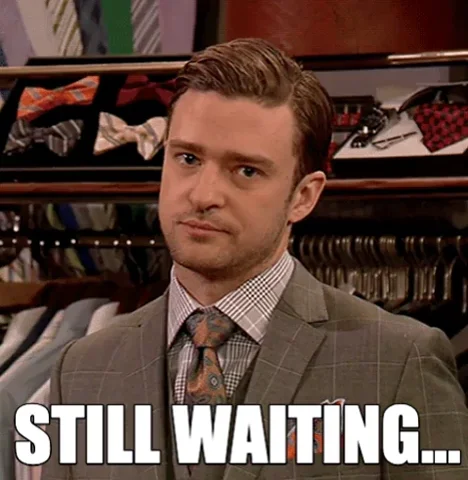

Começo do site
esse é o meu primeiro site, deixarei para meu portfólio. De início será estático (HTML e CSS), mas meus outros projetos irei fazer coisas mais elaboradas, valeu :)
Primeiro projeto finalizado
consegui finalizar o Notas do Saber, deixei o link na seção Downloads, passem lá
Resolve Tudo e eConvert
dei um gás em mais dois projetos, fiz o front principal deles, na aba projetos tem uma apresentação deles, tmj
Primeiro cliente
fiz o primeiro projeto para um cliente! Um site para uma pizzaria, onde fiz em HTML e CSS, e o cliente gostou muito, fiz algo simples como páginas de cardápio, apresentação, contato e localização, e ele ficou muito satisfeito, e eu também, tmj
CMHub e Obrigado por Hoje!
Mais dois projetos web que fiz o Front-End (clique aqui para ver), acho que estou indo bem no front já, vou começar a estudar o back